Práctica 2 Señales continuas
Contents
Integrantes
- Rodrigo Luna Reyes
- José Eduardo Hernandez Garcia
- Jesús Oren Alonso
Objetivos
- Manipulación básica de Matlab
- Gráficas de señales reales y complejas continuas
- Transformación de señales continuas(escalamientos y traslaciones)
- Cálculo de energía y potencia de señales continuas
Introducción
Matlab es una herramienta computacional muy poderosa que se ocupa en muchas ramas de ingenieria y ciencia. El nombre Matlab proviene del hecho que usa un lenguaje basado en matices, pero el software no solo se limita a un lenguaje también se pueden desarrollar aplicaciónes gráficas, ejecutar análisis de datos, realizar aplicaciones web o de IOT, podemos optimizar código de C y C++, tiene compatibilidad con muchos hardware como Arduino y Raspberry Pi, además de incluir una herramienta llamada Simulink. Simulink es un entorno de desarrollo de diagramas de bloques multidominio basado en diseño modelado. Las aplicaciones que se pueden desarrollar en matlab pueden ser de los siguientes campos:
- Análisis de datos
- Comunicaciónes Inalámbricas
- Deep Learning
- Visión Artificial
- Procesamiento de señales
- Finanzas Cuantitativosy Gestión de Riesgos
- Robótica
- Sistemas de Control Matlab es un software muy profesional y por lo mismo tiene un alto costo si es que queremos adquirir la licencia, si eres estudiante tienes alternativa de 50 usd que es el precio especial para los universitarios, sin embargo cuando quieras realizar código de forma más profecional una licencia cuesta más de 2000 usd, sin embargo existen alternativas como Octave y Python. MathWorks
Desarrollo
1.-A continuación se muestra Fun1
function [ F ] = fun1(w, a) F=a./(a.^2+w.^2); end
2.-A continuación se muestra el uso de una función que gráfica F( ) de -2 a 2 con 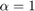
) de -2 a 2 con 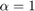
w = -2:0.01:2; createfigure(w,1);

3.-Uso de función anónima y gráfica de un ejemplo
syms t w f1=fourier(exp(-2.*t).*heaviside(t),t,w); f = @(w) 1./(2+w.*1i); t = -1:0.01:5; figure plot(t,exp(-2.*t).*heaviside(t)); title('f(t)=(exp(-2t))u(t)'); w = -10:0.01:10; figure plot(w,real(f(w))); title('Parte real de F(w)'); figure plot(w,imag(f(w))); title('Parte imaginaria de F(w)');
 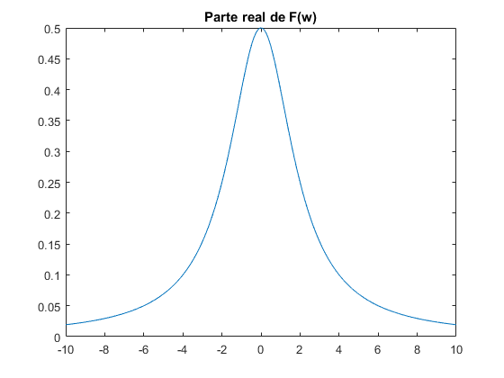 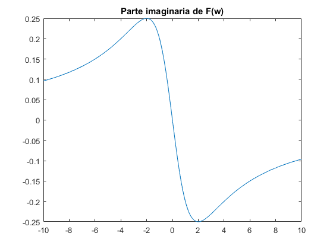
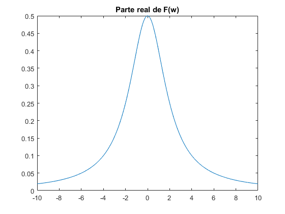 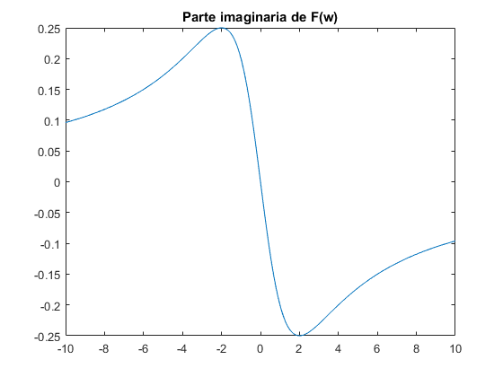 4.-Ejercicios M1.1-M1.4 Lathi
f = @(t) exp(-t).*cos(2*pi*t); t = 0; f(t) t = -2:2; f(t) figure plot(t,f(t)); xlabel('t'); ylabel('f(t)'); grid on; t = -2:0.01:2; figure plot(t,f(t)); xlabel('t'); ylabel('f(t)'); grid on; u = @(t) (t>=0); t = -2:2; figure plot(t,u(t)); xlabel('t'); ylabel('u(t)'); t=-2:0.01:2; figure plot(t,u(t)); xlabel('t'); ylabel('u(t)'); axis([-2 2 -0.1 1.1]); p = @(t) ((t>=0)&(t<1)); t = -1:0.01:2; figure plot(t,p(t)); xlabel('t'); ylabel('p(t)=u(t)-u(t-1)'); axis([-1 2 -.1 1.1]); g = @(t) exp(-t).*cos(2*pi*t).*(t>=0); t=-2:0.01:2; figure plot(t,g(2*t+1)); xlabel('t'); ylabel('g(2t+1)'); grid on; figure plot(t,g(-t+1)); xlabel('t'); ylabel('-t+1'); grid on; plot(t,g(2*t+1)+g(-t+1)); xlabel('t'); ylabel('h(t)'); grid on; x = @(t) exp(-t).*((t>=0)&(t<1)); t = 0:0.01:1; E_x = sum(x(t).*x(t)*0.01) x_cuadrado = @(t) exp(-2*t).*((t>=0)&(t<1)); E_x = quad(x_cuadrado,0,1) g_cuadrado = @(t) exp(-2*t).*(cos(2*pi*t).^2).*(t>=0); t = 0:0.001:100; E_g = sum(g_cuadrado(t)*0.001) E_g = quad(g_cuadrado,0,100)
ans =
1
ans =
7.3891 2.7183 1.0000 0.3679 0.1353
E_x =
0.4367
E_x =
0.4323
E_g =
0.2567
E_g =
0.2562
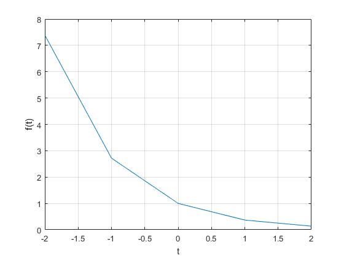 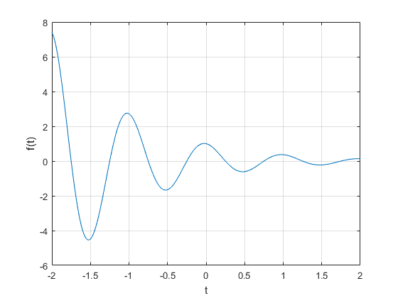 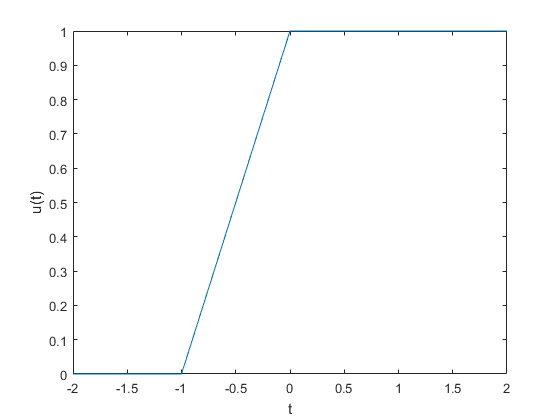 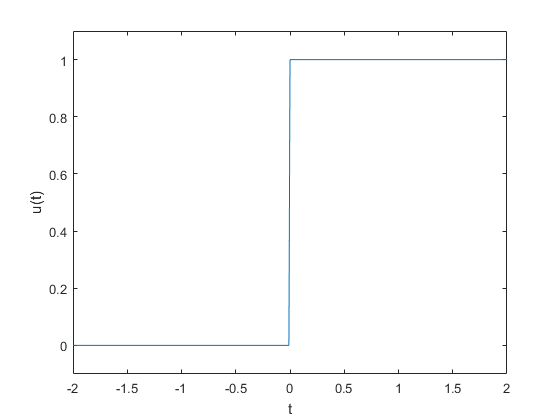 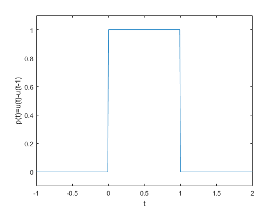 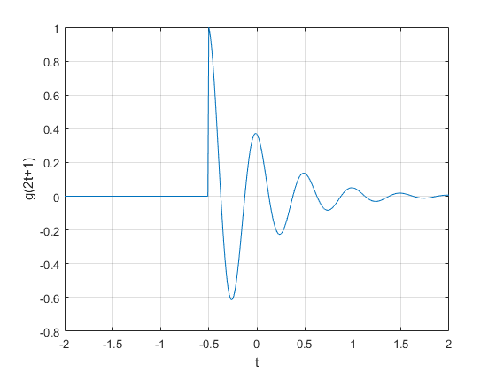 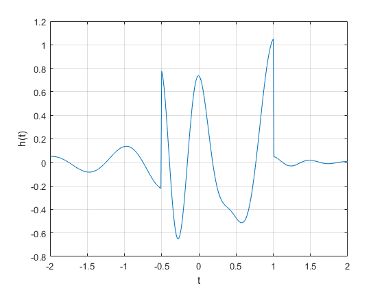 4.- Resolviendo problea 1.1.2 Encuentre la energía de las siguientes señales, ¿Cuál es el efecto de la energía si la señal es multiplicada por k?
a)
t = 0:0.01:1; x = @(t) t; E_x = sum(x(t).*x(t)*0.01) figure plot(t,x(t));xlabel('t');ylabel('x(t)');
E_x =
0.3384
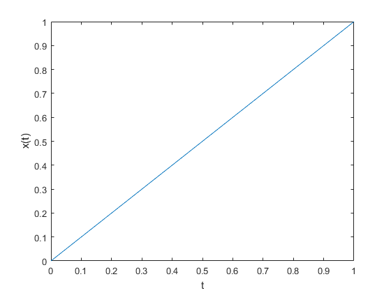 b)
t = -1:0.01:0; x = @(t) -t; E_x1 = sum(x(t).*x(t)*0.01) figure plot(t,x(t));xlabel('t');ylabel('x1(t)');
E_x1 =
0.3383
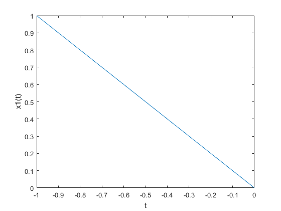 c)
t = 0:0.01:1; x = @(t) -t; E_x2 = sum(x(t).*x(t)*0.01) figure plot(t,x(t));xlabel('t');ylabel('x2(t)');
E_x2 =
0.3384
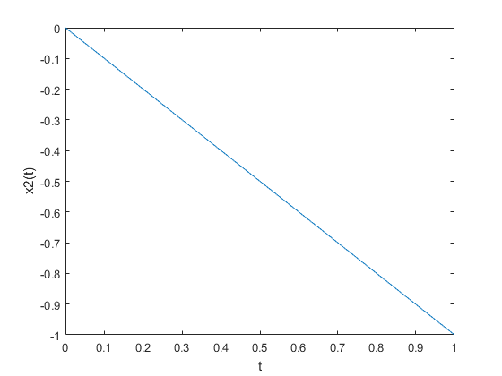 d)
t = 0:0.01:2; x = @(t) (t-1).*(t>=1); E_x3 = sum(x(t).*x(t)*0.01) figure plot(t,x(t));xlabel('t');ylabel('x3(t)');
E_x3 =
0.3384
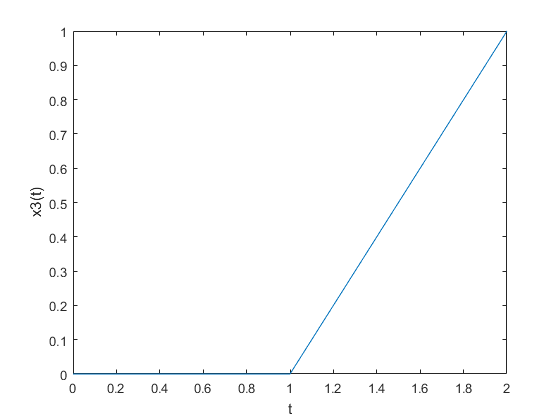 e)
t = 0:0.01:1; x = @(t) 2.*t; E_x4 = sum(x(t).*x(t)*0.01) figure plot(t,x(t));xlabel('t');ylabel('x4(t)');
E_x4 =
1.3534
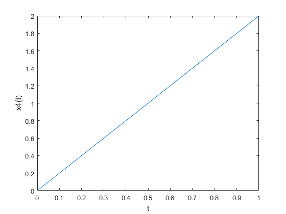 6.- Fución Energía
function [ resp ] = energia( fun,limits) %Esta función devuelve la energía de una señal reciviendo una función %anónima. t = limts; x = fun; resp = sum(x(t).*x(t)*0.01); end
Encuentre las enegías de un par de señales 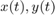. Dibuje y encuentre la energía dde las señales 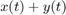 y 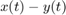.
a) Energía de 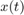
t = 0:0.01:2; x = @(t) 1+t.*0; E_x = energia(x,t) figure plot(t,x(t));xlabel('t');ylabel('x(t)');
E_x =
2.0100
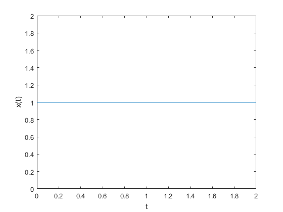 Energía de 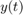
y = @(t) ((t>=0)&(t<=1))-((t>=1)&(t<=2)); E_y = energia(y,t) figure plot(t,y(t));xlabel('t');ylabel('y(t)');
E_y =
2.0000
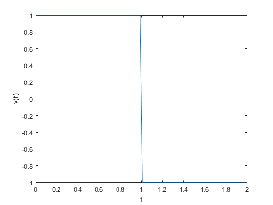 Energía de y
f=@(t) 1+t.*0+((t>=0)&(t<=1))-((t>=1)&(t<=2)); E_xy = energia(f,t) figure plot(t,f(t));xlabel('t');ylabel('f(t)=x(t)+y(t)');
E_xy =
4.0100
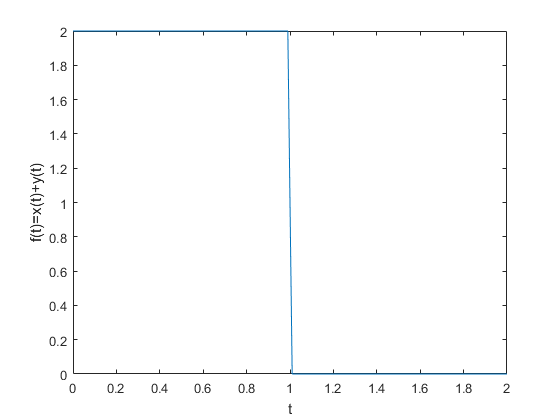 Energía de y
f=@(t) 1+t.*0-((t>=0)&(t<=1))-((t>=1)&(t<=2)); E_xy = energia(f,t) figure plot(t,f(t));xlabel('t');ylabel('f(t)=x(t)-y(t)');
E_xy =
0.0100
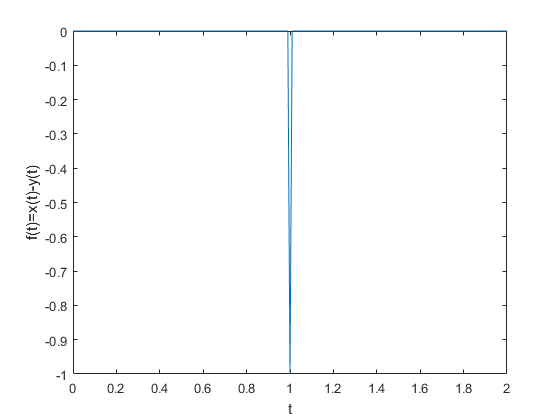 b) Energía de
t = 0:0.01:2*pi; x = @(t) sin(t); E_x = energia(x,t) figure plot(t,x(t));xlabel('t');ylabel('x(t)');
E_x =
3.1416
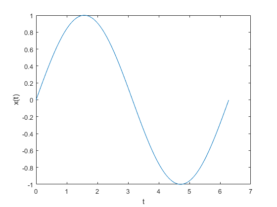 Energía de
y = @(t) 1+t.*0; E_y = energia(y,t) figure plot(t,y(t));xlabel('t');ylabel('y(t)');
E_y =
6.2900
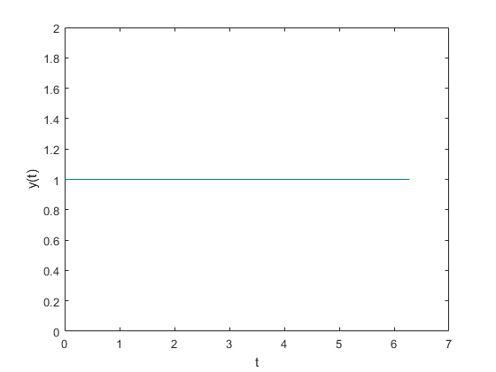 Energía de y
f=@(t) 1+t.*0+sin(t); E_xy = energia(f,t) figure plot(t,f(t));xlabel('t');ylabel('f(t)=x(t)+y(t)');
E_xy =
9.4316
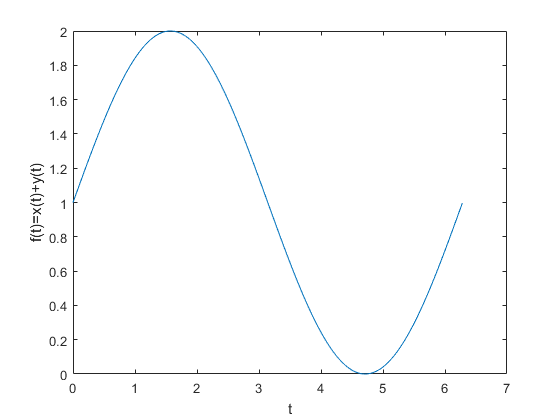 Energía de y
f=@(t) 1+t.*0-sin(t); E_xy = energia(f,t) figure plot(t,f(t));xlabel('t');ylabel('f(t)=x(t)-y(t)');
E_xy =
9.4316
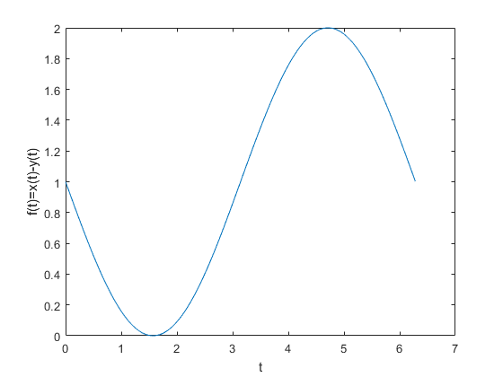 c) Energía de
t = 0:0.01:pi; x = @(t) sin(t); E_x = energia(x,t) figure plot(t,x(t));xlabel('t');ylabel('x(t)');
E_x =
1.5708
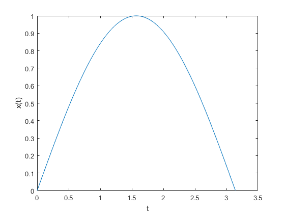 Energía de
y = @(t) ((t>=0)&(t<=1))-((t>=1)&(t<=2)); E_y = energia(y,t) figure plot(t,y(t));xlabel('t');ylabel('y(t)');
E_y =
2.0000
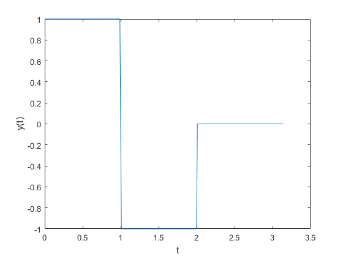 Energía de y
f=@(t) 1+t.*0+sin(t); E_xy = energia(f,t) figure plot(t,f(t));xlabel('t');ylabel('f(t)=x(t)+y(t)');
E_xy =
8.7208
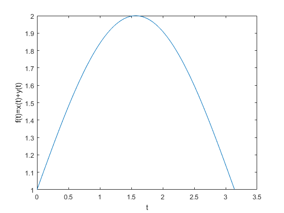 Energía de y
f=@(t) 1+t.*0-sin(t); E_xy = energia(f,t) figure plot(t,f(t));xlabel('t');ylabel('f(t)=x(t)-y(t)');
E_xy =
0.7208
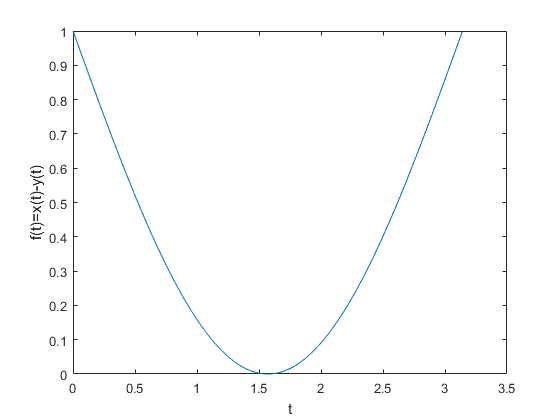 7.- Función Potencia
function [ resp ] = potencia( fun,limits) %Esta funcíon calcúla la potencia de una señal resp = int(fun^2,limits(1),limits(length(limits)))/length(limits); end
Resolviendo ejercicio 1.1.4
syms t; f = symfun(t.^2,t); T= -2:0.01:2; P_x=potencia(f,T) figure plot(T,f(T));xlabel('t');ylabel('x(t)');
P_x = 64/2005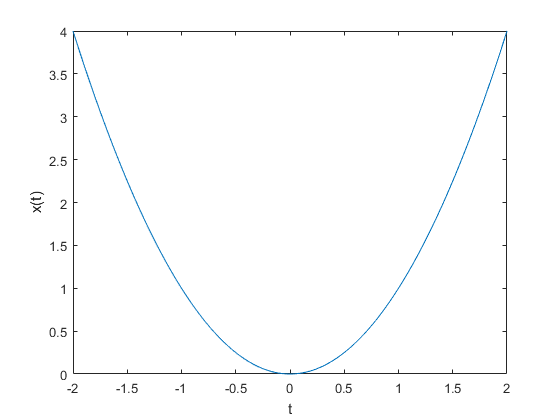